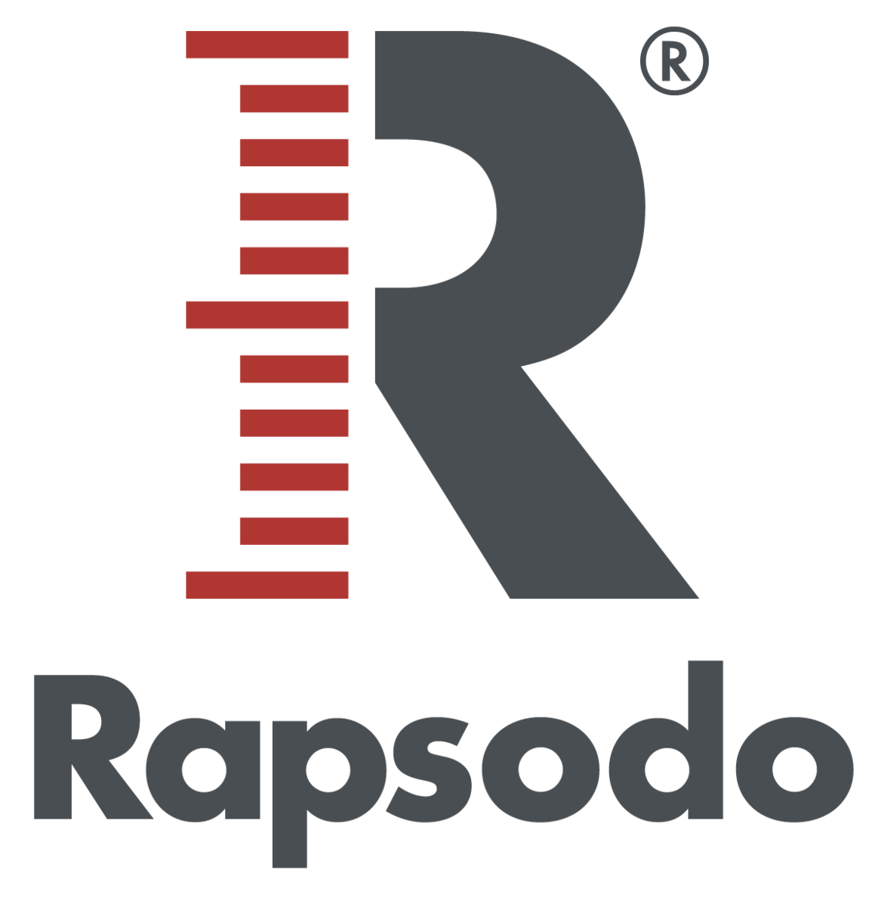

About Me
Self-motivated, high-achieving college student majoring in Data Science and Computer Science. My passion is using data to evaluate and enhance player performance and game strategy for the sport I love, baseball. I have four years of experience analyzing baseball statistics for my Instagram fan page. With a longtime background in softball, I take pride in my high softball/baseball IQ. My goal is to apply my skills in baseball analytics, game operations, and research within a professional baseball organization.
My Skills
Python

R
Excel

HTML

Java

Rapsodo 